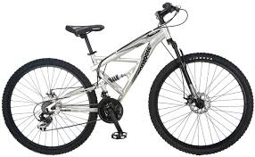
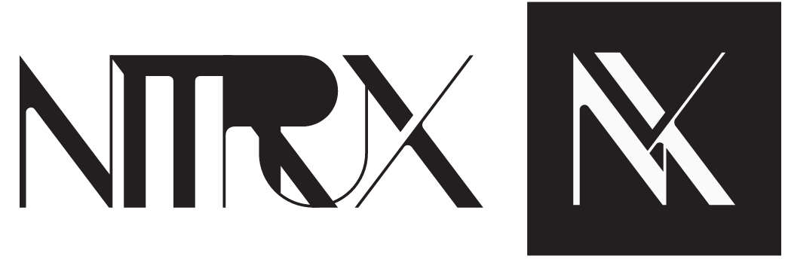

The Opreting system designed for you
Beautiful and fast
Atom, the desktop envirment of Ozon is designed in house to get your stuff done, while still being slick and modern.
|
Stable and secureBased on the stable and secure core of fedora, Ozon provides the security you've come to excpect from a modern Linex system. |
Free and openOzon is free and open source. So anyone can take a look at source code, fork it for their own needs and contribute back to the upstream. |
Ozon is a collboration between
|  | & |